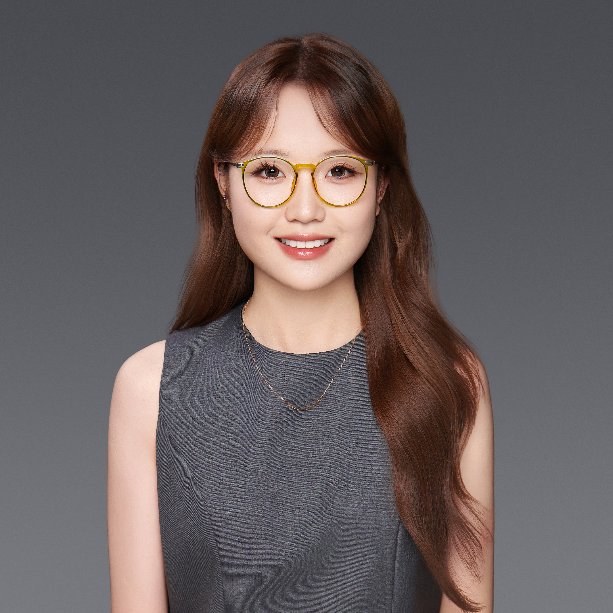
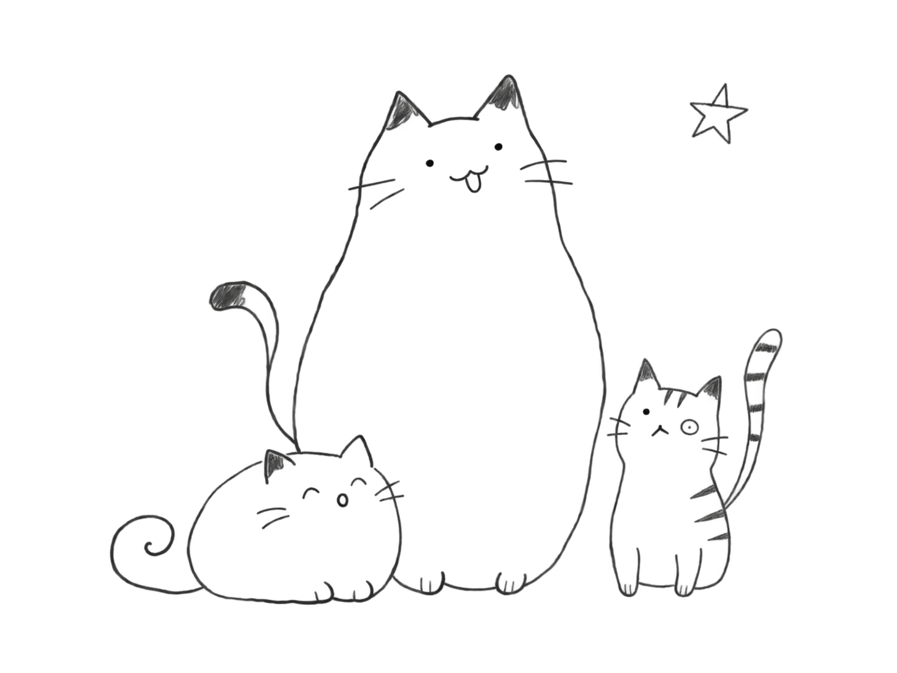

Renmin University of China (RUC), Beijing, China
09/2023–06/2027
Program : Creative Communication and Advertising
( Major in Digital Media Art ; Minor in Advertising )
- GPA
- 3.68 / 4.00
- 88 / 100
- IELTS
- 6.5
- L 7.5R 6.5W 6.0S 6.5

Studying Digital Media Art and Advertising at Renmin University of China has shaped my perspective across design, communication, and market research. I seek to understand people’s needs within social and commercial contexts, drawing on research and experimentation to make informed design decisions.
09/2023–06/2027
Program : Creative Communication and Advertising
( Major in Digital Media Art ; Minor in Advertising )
06/2026–08/2026
02/2025–05/2025
06/2025–06/2026
Researcher
06/2025–06/2026
Project Lead
Second Prize, 17 th RUC Student Cross-Media Works Competition
09/2026National Third Prize & Beijing First Prize, National College Students Advertising Art Competition
11/2025Outstanding Student Leader, RUC, 2025
2025Third Prize, RUC Social Work and Volunteer Service Leadership Scholarship, 2025
2025National Second Prize, Chinese Collegiate Computing Competition (4C)
07/2024RUC Undergraduate Academic Excellence Scholarship, 2024
202409/2024–09/2025
01/2024–09/2025
09/2024–05/2025
